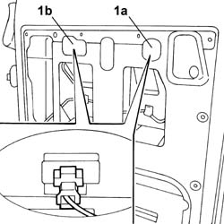

5540A94 L/H OR R/H NUMBER PLATE LIGHT (ONE) - R+R
- Path
- Procedures > 55 ELECTRICAL EQUIPMENT > 5540 EXTERIOR LIGHTING > 5540A LIGHTING > 5540A94 L/H OR R/H NUMBER PLATE LIGHT (ONE) - R+R
- Kind
- repair procedure (removal / refitting; the operation number is the code)
- Applies to
- all engines; all production periods
- Interactive page
- https://sloeber94.github.io/elrnDB-fDct/en/#/244001370
Applies to: all engines; all production periods
 Removing
Removing
 Refitting
Refitting- Disconnect the negative battery terminal.
 | Description | Connector |
|---|---|---|
. | Battery | A001B |
Op. 7020E34 REAR DOOR FLAP INTERIOR PANEL - R+R
-
| Description | Connector |
|---|---|---|
1a | Right number plate light | F051 |
| Description | Connector |
|---|---|---|
1b | Left number plate light | F050 |

Applies to: all engines; all production periods
- Undo the bolts fixing the number plate light.
- Remove the number plate light.
Applies to: all engines; all production periods
Refitting
Removing- Position the number plate light.
- Secure the light tightening the bolts.
- Connect the electrical connector.
| Description | Connector |
|---|---|---|
. | Right number plate light | F051 |
| Description | Connector |
|---|---|---|
. | Left number plate light | F050 |
Op. 7020E34 REAR DOOR FLAP INTERIOR PANEL - R+R
- Connect the negative battery terminal.
| Description | Connector |
|---|---|---|
. | Battery | A001B |